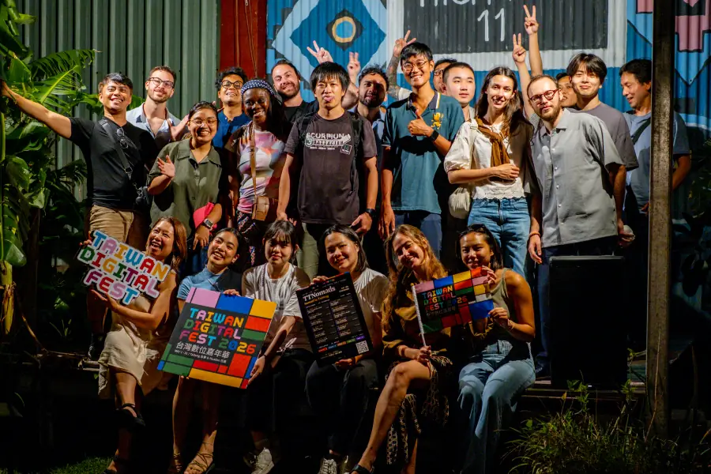
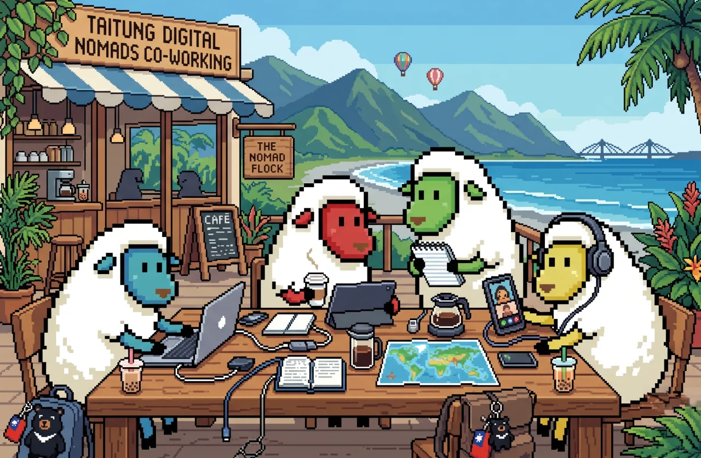
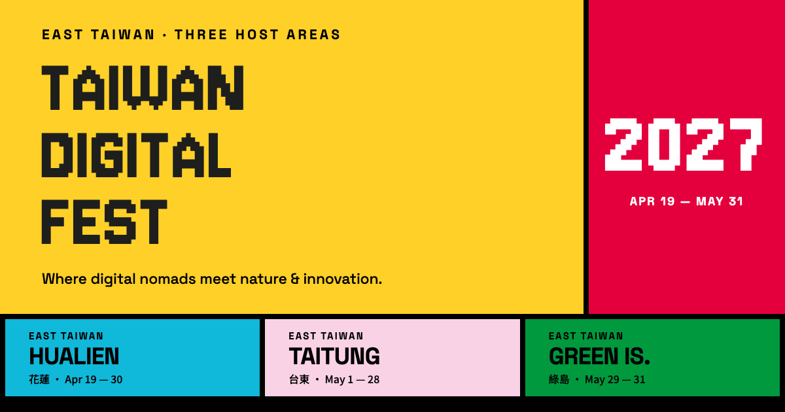

TDF 不是一場單點活動，而是亞太數位遊牧社群在東台灣展開的 43 天共同生活。
One festival. Three places. A community-led migration across East Taiwan.
Where digital nomads meet nature & innovation.數位遊牧者，相遇於山海與創新。
TDF 不是一場單點活動，而是亞太數位遊牧社群在東台灣展開的 43 天共同生活。
One festival. Three places. A community-led migration across East Taiwan.
真實社群先於流量與推銷。
工作節奏與山海生活並存。
面向國際，也尊重地方脈絡。
清楚、誠實、有文化感。
主辦與背書品牌，承載組織信用。背書句固定：HOSTED BY TAIWAN DIGITAL NOMAD ASSOCIATION · TDNA，高度 ≤ 標題 25%。
Taiwan Digital Fest 是所有參與者接觸的主要對外身份；年份只標示當屆，不屬於識別本身。
花蓮、台東、綠島平等並列。不用 Act I／II／III、第一站／壓軸；顏色不永久綁定某一地。
Where digital nomads meet nature & innovation.
數位遊牧者，相遇於山海與創新。
固定句，不改寫。
Apr 19 — May 31, 2027
2027 年 4 月 19 日至 5 月 31 日（43 天）
當屆日期，每屆更新。
HUALIEN · TAITUNG · GREEN ISLAND
花蓮 · 台東 · 綠島
同尺寸、同字重、同位階。
Space Grotesk 700，TDF 可放進黃色方塊加黑框。背書 Hosted by TDNA 高度 ≤ 標題 25%。
Hosted by TDNA
#FFD028 · --tdf-yellow / --accent#10B8D9 · --tdf-cyan#E74310 · --tdf-orange / --warn#F9D2E5 · --tdf-pink / --surface-warm#00993E · --tdf-green / --success#E4003D · --tdf-magenta / --danger#C54090 · --tdf-purple#004E9D · --tdf-blue#F6F6F6 · --tdf-gray-50 / --surface#1E1F1C · --tdf-ink / --fg#FFFFFF · --tdf-white / --bg#000000 · --tdf-black / --border--accent 預設黃，可整頁換成青或橘，不三色並用。| Text on | Swatch | Ratio |
|---|---|---|
| Black | Yellow | 14.3 |
| Black | Pink | 15.4 |
| Black | Cyan | 8.9 |
| Black | Green | 5.6 |
| Black | Orange | 5.2 |
| White | Ink | 16.6 |
| White | Blue | 8.2 |
| White | Magenta | 4.8 |
| White | Purple | 4.7 |
| White · display only | Orange | 4.0 |
| White · display only | Green | 3.7 |
Ink 不得當小字放在橘、綠、桃紅、紫紅、深藍上。
--muted：Ink 混 28% 白，≈7:1 on white，只給說明文字。--border-soft：黑 15%，只給表格內列分隔。design-tokens.json。All English headings, the year and short numbers use the pixel face, uppercase, leading .9, tracking .02em.
所有繁中標題使用 700 粗體像素字；行高 1.45、字距 .08em，兩行不得重疊。繁中內文仍用 Noto Sans TC。
64–164 px · leading .82–.9Section --text-2xl 44Eyebrow 14–16 · .2em uppercaseNothing visible below 14 px8 px module.
5 px structure.
3 px on mobile.
非對稱但有清楚閱讀順序：一個主導色塊、一個輔助欄、幾個小點綴格。留白也是合法色塊，不為填滿而裝飾。用黑線與實色分隔；不用圓角、陰影、玻璃、漸層。
--container-max--section-y-*--radius-*--elev-ring 1 px black, --elev-raised 3 px black.--focus-ring 3 px gap + 3 px blackPrimary：黃底黑字 3 px 黑框，min-height 48，Space Grotesk 700 16 px。一個視窗只有一顆 primary。Secondary：白底，hover 變淺灰。文字連結 2 px 底線，hover 換黃底線。
Tags & status14 px 粗體標籤、46 px 輸入框 3 px 黑框；focus 顯示 --focus-ring 與黃色底線；錯誤用 --danger 文字＋邊框，不只靠顏色。
| Pass | Covers | NT$ |
|---|---|---|
| Hualien week | Apr 19 – 30 | 3,200 |
| Taitung month | May 1 – 28 | 6,800 |
| Full festival | 43 days | 12,000 |
15–16 px；表頭黑字淺灰底；列以 --border-soft 分隔；對齊數字用 --font-mono。數字為範例。
--motion-fast hover 與微狀態--motion-base 狀態切換；大色塊最多 400 ms--ease-standard cubic-bezier(0,0,.2,1)。整格滑動、色塊翻轉、硬切。Hover 只移動底色或邊框，文字不變淡。移到下方色塊試試。
--focus-ring。prefers-reduced-motion。


One stylesheet. Every color, size and rule on this page comes from it.
<link rel="stylesheet" href="https://cis.taiwandigitalfest.com/design-system/fonts/fonts.css">
<link rel="stylesheet" href="https://cis.taiwandigitalfest.com/design-system/tokens.css">
.btn-primary { background: var(--accent); color: var(--accent-on); border: 3px solid var(--border); }
.grid { gap: var(--tdf-line); background: var(--border); }
Agents：先讀 USAGE.md，再讀 DESIGN.md，把 tokens.css 的 :root 貼進第一個 <style>，沿用 components.html 的範本，最後對照 preview 頁檢查。Schema token 名稱不改，品牌值只透過 --tdf-* 擴充。
--tdf-* extensions
design-tokens.jsonW3C design tokens · HEX / CMYK
tailwind-v4.css@theme mapping for Tailwind 4
DESIGN.mdRules, prohibitions, AA table, component specs
fontsJersey 10 · Cubic 11 (OFL) woff2
manifest.jsonod-design-system-project/v1
favicon.svgOfficial mark · vector only
og-image.png1200 × 630 master
{kind=link}
{kind=link}